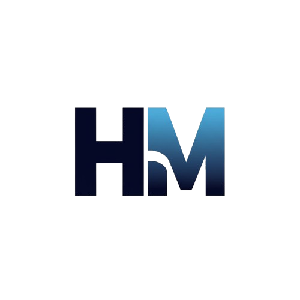

Sobre nós

A HyperMech é uma distribuidora especializada em soluções industriais de alta performance, com uma trajetória sólida no mercado. Nosso foco é fornecer soluções completas para manutenção, reparo e operação (MRO), atendendo a setores que exigem excelência e inovação tecnológica.
Oferecemos uma ampla gama de produtos, como equipamentos para automação industrial, materiais elétricos, disjuntores, inversores, motores e itens de segurança, sempre trabalhando com as melhores marcas, como Schneider, WEG, Siemens e Prysmian, garantindo qualidade e confiabilidade.
Com presença no Brasil e uma estrutura robusta, a Hypermech está em constante evolução, oferecendo soluções personalizadas e inovadoras para empresas de todos os portes. Através de nossos centros de distribuição e canais digitais, garantimos agilidade, segurança e a entrega de produtos e serviços de excelência, consolidando-nos como a parceira ideal no setor industrial, sempre atendendo às necessidades de nossos clientes de forma confiável e moderna.
Nosso Estabelecimento
Veja no mapa abaixo como nos encontrar!
Nossos Produtos
- CLP
- Inversor
- Motor
- Soft Starter
- Switch
Veja um pouco da nossa estrutura